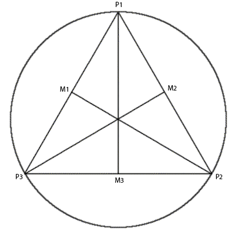

Aufgabe 2.2
Legen sie eine Kopie der Lektion 4 des Learning WebGL Tutorials an. Ersetzen sie die dargestellte Pyramide durch eine Kugel. Lagern sie die Implementierung Ihrer Kugel in ein separates Objekt in einer eigenen Datei sphere.js aus. Parametrisieren sie die Konstruktorfunktion der Kugel mit der Rekursionstiefe und definieren sie eine Instanzfunktion draw() für die Darstellung der Kugel. Verwenden sie dafür nicht den Code aus Lektion 11, sondern erzeugen sie die Dreiecke der Kugel durch rekursive Unterteilung eines Tetraeders oder einer anderen geeigneten Ausgangsform. Recherchieren sie Details zu dem Algorithmus selbstständig. Erzeugen sie die Farbinformation für die Eckpunkte der Dreiecke aus den Koordinaten der Eckpunkte indem sie diese jeweils in das Interval [0, 1] transformieren.
Aufgabe 2.3
Ersetzen sie den Würfel in dem Beispiel durch acht um 50% verkleinerte Kugeln. Platzieren sie eine der Kugeln an jedem der acht Eckpunkte des Würfels. Erzeugen sie dabei nur eine Instanz Ihrer Kugel und transformieren diese durch Angabe von geeigneten Transformationsmatrizen an die richtigen Positionen.
Ergebniss
Lösungsansatz
Ausgehend von einem Tetraeder, werden die Koordinaten der die Kugel beschreibenden Dreiecke über einen rekursiven Funktionsaufruf berechnet. An die rekursive Funktion werden jeweils die Eckpunkte der das Tetraeder beschreibenden Dreiecke und der Wert der maximalen Rekursionstiefe (d>=0) übergeben. Ihr Algorithmus lässt sich wie folgt beschreiben: So lange die Abbruchbedingung (d = 0) nicht erreicht ist, werden die Mittelpunkte (M1, M2, M3) der übergebenen Punkte (P1, P2, P3) berechnet. Die Eckpunkte der dadurch neu entstanden Dreiecke werden normalisiert, der Ergebnismenge hinzugefügt und erneut der rekursiven Funktion (mit d = d-1) übergeben. Dabei gilt: M1 = (P3 x,y - P1 x,y)/2+P1 x,y M2 = (P2 x,y - P1 x,y)/2+P1 x,y M3 = (P3 x,y – P2 x,y)/2+P2 x,y 